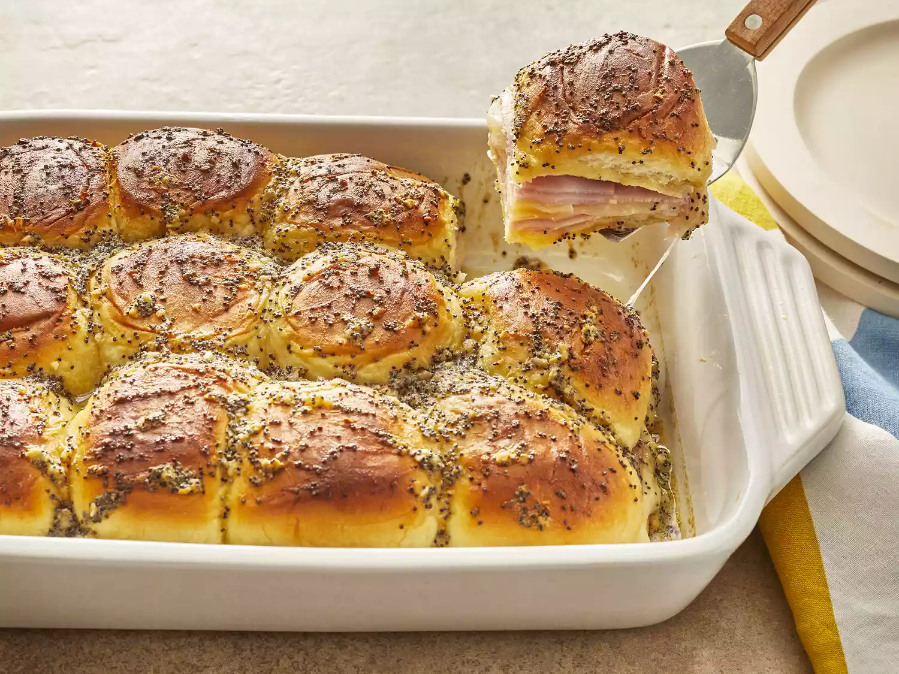

Baked Ham and Cheese Sliders

Description
These delicious oven-baked sliders are perfect for feeding family and friends especially during festive occasions such as parties. They make great appetizers or work as a main dish. They can be paired with grilled asparagus, salads or roasted potatoes.
If there are any left-overs, you can store them in the refrigerator for up to two days. You can also freeze them for up to 6 months. When ready to use, let them thaw overnight and then bake. Reheat in the oven at 350 degrees F until warmed thoroughly.
Ingredients
- ¾ cup melted butter
- 1 ½ tablespoons Dijon mustard
- 1 ½ teaspoons Worcestershire sauce
- 1 ½ tablespoons poppy seeds
- 1 tablespoon dried minced onion
- 24 mini sandwich rolls or 12 large
- 1 pound thinly sliced cooked deli ham
- 1 pound thinly sliced Swiss cheese
Steps
- Gather all ingredients. Preheat the oven to 350 degrees F (175 degrees C). Grease a 9x13-inch baking dish.
- Mix butter, Dijon mustard, Worcestershire sauce, poppy seeds, and dried onion in a bowl.
- Separate the tops from the bottoms of the rolls; arrange the bottom pieces in a layer in the prepared baking dish. Layer about 1/2 of the ham onto the rolls; add a layer of Swiss cheese and top with remaining ham slices.
- Place the tops of the rolls onto the sandwiches. Pour mustard mixture evenly over the rolls.
- Bake in the preheated oven until the rolls are lightly browned and the cheese has melted, about 20 minutes. Slice into individual rolls through the ham and cheese layers to serve.
Home Page